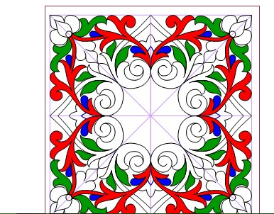
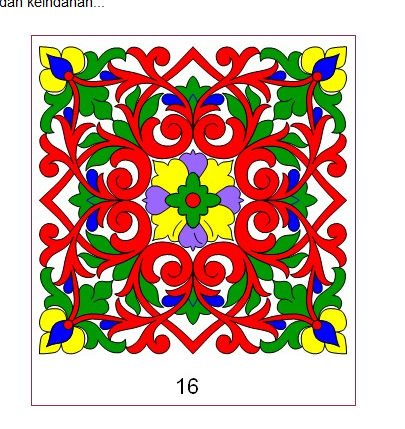
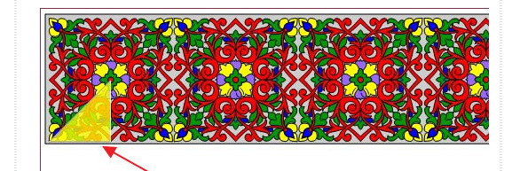

how to draw
selamat datang di kelah ornamen
ornamen adalah ukiran atau gambaran pendukung yang mempercantik tulisan di sekitarnya tampa basa-basi lagi ayo kita mempelajarinya
ornamen
berikut adalah langkah-langkah membuat oranmen perhatikan dengan seksama ya
pertama butlah segitiga sebagai dasar ornamen

kemudian mulailah untuk mebentuk sketsa

mulailah membuat banyak segitiga dengan sketsa serupa

susun semua segitiga sesuai pola

rapihkan agar benar-benar simetris

ketika sudah terbentuk bereskan semua yang tersisa
ketika sudah terwarna jadilah sudah ornamen kita
kita bisa membuat banyak segitiga agar hasilnya dapat memuaskan
selamat mencoba....:v
trimakasih telah berkunjung mohon maaf kiranya ketika banyak kekurangan dari segalahal